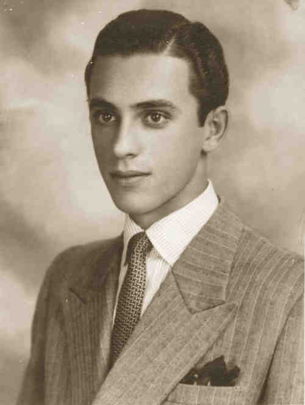
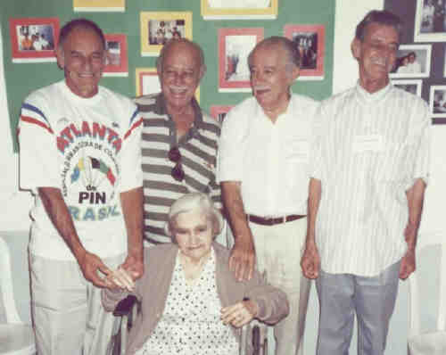
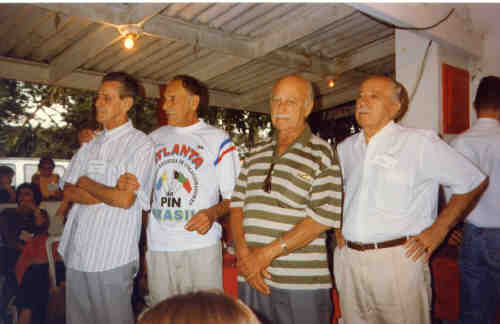
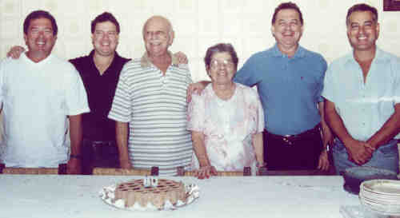
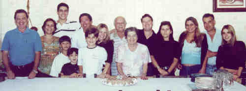

João Oswaldo Facci
 • fotos: Faccinho. 
(Clique na Foto para vê-la no Tamanho Original)")
• fotos: Petrellafl147_Joao Oswaldo Facci_Edelweis Dulce.  • fotos: Mair, Faccinho, Arnaldo, Ultério e Julia.  • fotos: ultério_mair_faccinho_arnaldo - 1997.  • fotos: João Oswaldo Facci -80 anos do Vô Faccinho - Roberto_Célio_Faccinho_Dulce_Sérgio_Ricardo.  • fotos: João Oswaldo Facci -80 anos 06 05 2001. João casad[:o::a] Edelweiss Dulce De Franchi. (Edelweiss Dulce De Franchi nasceu em em 6 Ago 1924.) |
 Outro nome para João foi Faccinho.
Outro nome para João foi Faccinho.